I will be aiming for a High Distinction grade within this assignment, and also more generally throughout the course. I have done a few MOOC courses relating to web development, and have used similar frameworks to VUE, such as React and Angular. Since I am familiar with these topics, I will use this course to fill in the gaps of knowledge, and focus on the more advanced topics within the course, as well as the more formal proposal process.
I believe that this report reflects my targeted mark. Throughout the 8 weeks so far, my reflections have provided information in different formats (text, rich text and images). I have constantly been looking to outside sources to expand my knowledge of what is taught in class, and offering my findings in detail. In addition, I have included a section at the end this document reserved for useful code snippets. This way when I have come across a problem which I have already solved, there is an easy place I can refresh myself on the correct way to approach the problem. Finally I hope that my report is easily readable for other people, as that has been my goal while writing it.
Web development requires the use of three languages: HTML, CSS and Javascript. These three languages work together to tell the browser how a website should look and act. By understanding them thoroughly, we are able to create high quality, responsive websites, that users will find visually pleasing and easy to use.
Hyper Text Markup Language is a structured way to store the information which will be displayed on a webpage. More simply, HTML tells the browser WHAT to display.
HTML uses tags to hold the data. An example of a tag is: $\color{blue}<body>\color{red}</body>$. The opening tag in blue, has a matching closing tag in red. Relevant information is placed between the two tags. For our body example earlier, the browser will know that the information for the body will be between the opening body tag and the closing body tag.
Attributes for tags can be set within the opening tag. An example of using attributes to assign a class to a p element would look like: <p class="text">. A class groups a number of elements together, while another attribute id refers to only one element. There are many other HTML attributes to help us configure our elements. For a large list of possible attributes. visit .
To get started writing an HTML document, there is some boilerplate code that must almost always be present:
<!DOCTYPE html>
<html>
<head>
<title>Title</title>
<script src="INSERT LINK TO JAVASCRIPT FILE HERE"></script>
<link rel="stylesheet" type="text/css" href="INSERT LINK TO CSS FILE HERE">
</head>
<body>
INSERT HTML TO DISPLAY HERE.
</body>
</html>
Notice the indentation! To make this code easier to read, any tag that is inside another tag will be indented further. For example, it is easy to see that the head tag is inside the html tag. See the below table for descriptions of each tag.
P4cmp11cm Tag & Description
<!DOCTYPE> & This is to let the browser know that this is a current HTML5 document. Previous versions of html will have different codes to insert here.
<html>...</html> & This is the html document, all information will be inside this tag
<head>...</head> & This contains information that will not be displayed within the webpage itself.
<title>...</title> & The title to the webpage. This will be displayed either in the browser’s title bar area at the top of the window, or the tab area.
<script>...</script> & This can either contain JavaScript code directly, or have a src attribute that links to an external file (either locally, or from a http link)
<link>& This links to some exterior document. The most common use of the link tag is to link to an external css file, but other documents that might be linked are icons, and licenses.
<body>& Body contains all the information that will be displayed on the website itself.
<p>...</p> contains a paragraph of text.
<h#>...</h#> contains a header. # is replaced by the size of header, 1 is the largest and 6 is the smallest.
<div>...</div> is a generic tag that creates a container for other elements.
<a href="...">...</a> creates a hyperlink to another page. href is the link, and the text between the tags is displayed to the user.
There are a few tags which don’t require a closing tag. These tags get information through other means, like the <img /> tag, which knows what image to render using the src attribute.
<img src="image location"> loads an image from either a website, or local storage.
Tables are a great way to organise information on a website. They act the same way as tables within commonly used word processors such as Microsoft Word with columns and rows.
The table is broken into two parts: <thead> which uses <th> to create header cells, and <tbody> which uses <td> to create regular cells. The graphic below provides a clear understanding of the structure of a table. Remember, the values for each cell are placed in the inner most tags (th and td).
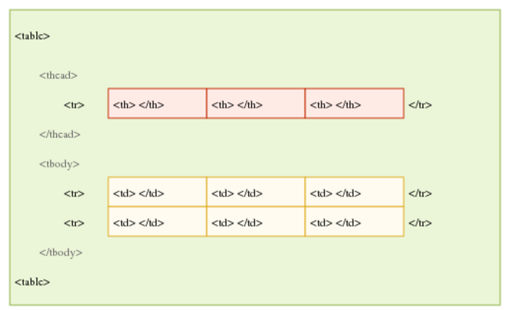
Forms are a collection of input fields within HTML. The user can enter different types of information depending on the type of input field. When the form is submitted, the browser will collect all the inputs and either send them to a url (if the attribute action is present on the form), or will send them to a JavaScript function (if the attribute onsubmit is present). An example of a form with the inputs name, age and location might be: [form-html]
<form onsubmit="submitForm(event)">
<label for="name">Name</label>
<input type="text" id="name" size=20 maxlength=20>
<label for="age">Age</label>
<input type="number" id="age" max=120>
<label for="location">Location</label>
<input type="text" id="location">
<input class="button" type="submit" value="Submit">
<input class="button" type="reset" value="Cancel">
</form>
Which would output:
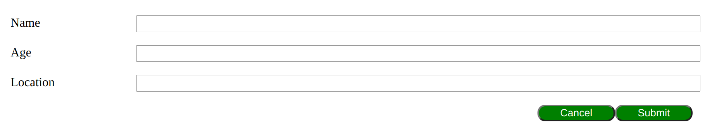
| [fig:email-error] | |
| Input fields can also be displayed as buttons, for example if the input type is submit or reset as seen in the example form above. | |
| For accessibility reasons, each input must be accompanied by a label tag, which uses the for attribute to connect to an input’s id. | 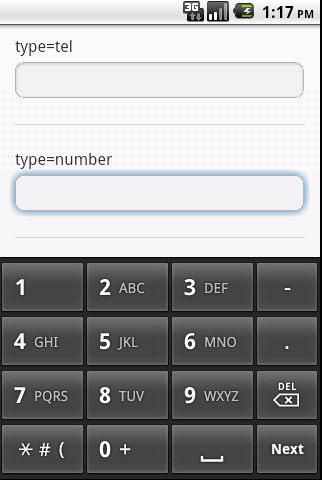 [fig:number-keyboard] |
Basic SyntaxCSS uses property name and value pairs separated by a colon. Different pairs are separated by a semi-colon. An example of making the text of an element blue would be: "color: blue;" where color is the property name(red) and blue is the property value(blue). |
|
Specifying the elements for these styles to be applied is done using some of the following options:
P4cmp11cm tag & This will apply a style to every element of a particular tag. For example, if p is used, every paragraph tag will have the specified styles applied. Note the lack of punctuation before the tag.
.class & This will apply styles to every element with a particular class. A class is specified with a period before the class name.
#id & This will apply styles to the element with a particular id. An id is specified with a hashtag before the id name.
In the following example, every element with the class "specific-class" would have a margin of 10 pixels and a border that is 1 pixel thick, solid and black.
.specific-class {
margin: 10px;
border: 1px solid black;
}
There are three options for where to place CSS code:
Inline Placed within the html code within the element. Example: <p style="color: red;">
Internal Placed within the style tag, usually within the head tag. Example: <style>p { color: red;}<style>
External Placed within an external .css file. This is then linked via the link tag as seen in 10.2.1.2.
This also effects how certain elements will override others. For example, any inline style will override any internal or external style, and any internal style will override any external style. The code is also read top to bottom, so styles at the bottom will override styles at the top.
Every element on a webpage is contained in the box above. The outer most layer, margin, is the space outside the border. This will change the perception of how far away the box is from other boxes. After the margins and border, is the padding, this is the space between the border and the content. Good use of the CSS box is critical to creating good spacing within a webpage.
JavaScript is a scripting language that is commonly used in web browsers. It has expanded outside of its original purpose to be able to do much more with the help of other programs such as NodeJS.
There are two options when declaring variables depending on if it is mutable or not. If the variable cannot be modified after initialization, use the keyword const followed by the variable name. For example const number = 2. If the variable is mutable, then use the keyword let. An example for this would be let letter = ’L’, where letter can be modified at a later time.
To declare a function, first use the function keyword, followed by the name, and a list of parameters within parenthesis. The internal code of the function is then placed within curly braces. To return a value to the calling function, simply use the keyword return. Example:
function addTwoNumbers(num1, num2) {
return num1 + num2;
}
Then to call this function, use addTwoNumbers(230, 384). Functions allow us to reuse code, instead of rewriting it every time.
Two useful objects within JavaScript is the window and document objects.
The window object references the entire browser window. This allows access to properties such as the location, history, height, width, etc.
The document object is a child of the window object. This contains everything that is displayed on the website. This includes the HTML and CSS. There are document methods that allow you to get an element by its id ( getElementById() ), as well as by its class ( getElementsByClass() ), and many more. For a full list of methods available within Document, see
JavaScript is covered in much greater detail in Week 3. See 4.1.
Vue.js is a framework that allows the creation of responsive user interfaces while reducing the amount of code actually written. It works with HTML/CSS/JavaScript to provide re-usable components, templates, state handling, and much more.
Within Vue, templates can be created. These templates contain the information displayed on the website, similar to HTML. In fact all HTML will work within these templates, but the templates include extra features to make responsive design much easier.
Templates allow for a reduction in code compared to traditional HTML. By finding common structures within the HTML, templates can be created so that different data can be inserted into these reusable structures. This means that we don’t have to spend time re-writing the same structures over and over. Syntactically, Vue uses double curly braces to represent areas where data will be inserted later. {{ name }} will be replaced with the value of the name variable.
For a simple example of where templating can reduce the amount of code written, refer back to 10.2.1.2. Each html document you create has to have these pieces of code. Instead of rewriting this every time, a template could be created as follows:
<html>
<head>
<title>Title</title>
<script src="{{ jsFile}}"></script>
<link rel="stylesheet" type="text/css" href="cssFile">
</head>
<body>
<h1>{{ title }}</h1>
<p> {{ paragraph }}
</body>
</html>
This could then be reused for many different websites with different information by supplying different values for the variables title, paragraph, jsFile, etc.. This of course can be expanded to much more complicated websites where there are many of the same pages. Consider Facebook, where everyone has their own profile page. These pages are standardised across the website to look the same, but the information is different on each one. A template is made once, then whenever the page is rendered it is filled with the appropriate data.
This then becomes even more powerful when responsive web apps are considered. If required, different templates could be created for each style of device (small mobile, tablet, desktop) to create a very different experience. When the user visits the web app, the appropriate template will be selected and used, all while the data remains the same.
Components are re-usable snippets of code that abstract away some code. Pre-defined options(or "props") can also be passed to the components to affect what is rendered making them much more flexible. Many components can then be built together to form much larger components, and then those components combined to create a whole application. All while using minimal code compared to pure HTML/CSS/JS.
| In this small example, the link component and the button component are reused within two separate, larger components. This is incredibly small compared to many web apps, which would reuse the components many, many times. This reduces repetition of code. | 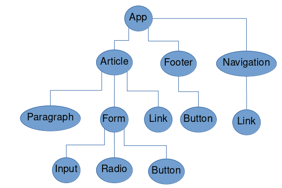 |
This task provided a very basic example to help learn the bare bones of HTML, and its commonly used tags. It also allowed practice in creating both a table and input form.
The code can be viewed at

This task focussed on introducing CSS, which makes the website look attractive. It allows practice with the structure of CSS, as well as with properties that are commonly used.
Building upon the last task, I formatted the website using CSS. This allowed me to create a website that has two columns. One which contains the table of entries, the other that contains the form to input new entries. The image at the top of the page is then modified to look slimmer and stretch the width of the window, while the title is centred below.
Using a two-column design used the space much more intelligently than the default styling, which would have spread both the table, and form across the entire screen, using double the vertical space.
See code on
See 10.3.1.2 since these tasks are combined into one website.
There are many ways to centre an element in CSS, this (9.2.2) is a pretty simple and useful one which can either centre an element horizontally, vertically or both. This doesn’t rely on any of the more advanced CSS features such as flexbox or grid.
I made a small JavaScript function that takes the inputs within the form, and dynamically updates the table. I also created a separate website to calculate the inputted student scores. This helped practice modifying the DOM dynamically with JavaScript, which allows for a seamless experience as the user, since information or elements can be modified without refreshing the page.
See code for the input form:
and for the student grades:
Being able to round numbers in JavaScript was useful in this project, since otherwise there could be tens of decimal places. To accomplish this I used variable.toFixed() [9.3.1]
Before form submission:
 After form submission:
After form submission:

Before score calculation:

After score calculation:

A small Todo app with three default items of a classic grocery list. New tasks can be added through the input text box. Tasks can be clicked to complete them.
This task introduced the concept of components. The component <todo-item> was reused multiple times, showing the utility of components. From this it shows if they are this beneficial in smaller applications, they must be exponentially so in large applications, making them incredibly important.
See the code on Github.
I found Window.onLoad() [9.3.1] to be useful in ensuring the entire page is loaded before Vue tries to reference an element.

This week I have read through the Assignment 1: Guidelines and Rubrics. I have understood what is required of the assignment, and started to make notes of ideas/requirements that will help me to complete this assignment.
Next week I will do research and think of an idea for my project. I expect this to take a fair bit of time to find a good idea that can be original, as well as managed within the time limitations of the course. This should take me approx. 4 hours.
Responsive design is all about modifying how your website looks based on the device. 5This is mandatory now with the sheer number of users which primarily browse websites on their mobile device.
The most important part of responsive design is also the easiest. Using the <meta name="viewport"> tag in the head tag of the HTML file tells the browser to make the width of the page dependent on the width of the device, rather than the number of pixels on the screen. This is due to the high density of pixels on today’s smartphones.
Adding the initial-scale=1 attribute to the meta tag will help with smartphones in landscape view.
For a better user experience, only scroll vertically. This is what modern users are accustomed to, and scrolling horizontally or zooming to see a page properly will cause frustrations.
For elements, it is preferred to assign size by percentage of parent element. This means that as the screen grows, so too does the element in proportion. Details such as margins, padding and font, should continue to use constant values.
Flexbox allows multiple elements within a row to be spread out various ways. Flexbox can evenly spread out these elements, or change the size of the elements proportionally to the row. When adding more elements, flexboxes will wrap around automatically. This creates a responsive design, while being very easy to develop by the developer.
CSS grid splits a container into grids. This allows for a container to be divided into the specified ratios. One part of this container is known as 1fr. For example, if there was a container that had two children, one was 1fr, and the other was 3fr, the one child would take up 25% of the space, and the other would take up 75% of the space. See the example below:
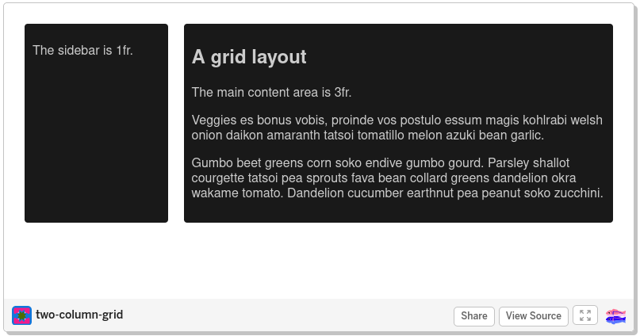
Media queries allow CSS to be specified depending on the screen size. This means that the same HTML and JavaScript can be used, while there are two completely different styles. Alternatively the two versions could share many styles, and only differ with a few dimensions.
This allows the creation of "breakpoints" or points where the change in screen size, changes the layout of the page. Major breakpoints occur when there are significant layout changes, such as shifting from horizontal placement, to vertical. Minor breakpoints are where there is a shift in a smaller detail of the screen such as padding, or font-size. The syntax is as follows:
@media (max-width: 600px) {
/* This CSS will be active for screens less than 600px wide*/
}
@media (min-width: 600px) {
/* This CSS will be active for screens greater than 600px wide*/
}
User Stories are a way of describing software requirements. It takes it a step further by placing the developer in the shoes of the user. This allows the developer to see understand what is important to the user, how it will effect them and the urgency of the potential change.
User stories can be written in the following formula: As a user, I want a feature so motivation. Although this isn’t a strict rule, and is more of a guideline for introducing the topic. The important part is that the sentence covers the who, what, and why. This skips over how to implement details. These can get very specific by creating possible personas for the users
User stories can also be broken up into three categories:
Epic Stories Large stories. General goals for the software. Usually the starting point. Can be broken down into a few user stories.
User Stories
Sub Stories Small stories, usually about smaller implementations that help with user stories.
Html Media tags are a way to add dynamic media into a website, instead of only static text and images. There are a few with varying uses:
| <video> <source src = "movie.mp4" type="video/mp4"> </video> | Loads a local video, which can be either mp4 or ogg. Possible attributes on the video tag are controls, width, height, autoplay and muted, which are all fairly self-explanatory |
|---|---|
| <audio> <source src = "movie.mp3" type="video/mp3"> </audio> | Much the same as video, except the tag is audio instead of video. Uses mp3 instead of mp4, and does not have the height or width attributes. |
| <canvas> | Creates a canvas on the screen which can then be drawn upon. This can be used to render graphics in real-time. |
An API that allows the developer to specify if an element is "draggable", and the actions that occur when that element is dropped. Most frequently the dropped element will be added as a child of the element it is dropped on.
Accessible through JavaScript’s navigator.geolocation which shares the users current location.
Since I am just starting out in the industry, and web development, it is handy to investigate how other sites are built. I then can observe what works well from a user perspective, and what falls short. Taking this I am able to learn from it and adapt it into my own style.
Please see 3.3.1 for further information about my proposal idea.
Two websites I found to be similar were Pinterest and garden.org. Pinterest because they are an image driven website, and garden.org for the horticulture relation.
Pinterest as a large tech company has a good responsive design. I imagine their priority would be on their app rather than their website.
Pinterest include the meta viewport tag in their header.
They use a number of columns to display images. Wider the screen, the more columns there are on the screen. They keep these columns at a fixed width of 252 px, and change the margins of the page accordingly. The large container is styled using media tags, changing the width as necessary. Each element is loaded individually with Javascript, and transformed/translated into place. The distances are calculated by knowing the previous images sizes as well as margins.
image
image
The navigation bar is also responsive. The main change is the search bar growing with the size of the screen to fill the navigation bar. Some features (such as advanced search) will disappear on lower widths when there isn’t enough room. Finally on very small screens, the search bar becomes a button that users press to open up the search bar below.
image
image
On individual profile pages, the layout changes depending on the size of the screen. For smaller screens, the image/video is what you initially see, then scroll for the text/information. On larger screens, the image/video is on the left, while the information is on the right.
image
image
garden.org is also quite responsive. For larger screens (> 1000px), there are two columns on the home screen, one for images the other for comments. For smaller screens, there is only one column, with comments being below images. These two columns grow and shrink depending on the size of the screen. The images within these columns are in columns, and the number of columns changes based on the screen width.
image image
image
image
When clicking on an image, a pop up window appears containing a larger version of the image. This grows as the screen grows, when it reaches a certain point ( 800px), it won’t grow any more, but will stay centred in the screen.
image image
Using CSS is the most efficient way, and lightweight way to make a website responsive. Using the media tags, it is easy to create multiple versions of a design that adapts automatically.
For Task 2, I decided to mock up the single plant page for my proposal. The information and photos just need to be added in later. I have created a simple layout of navigation bar at the top, as well as a main content pop-up in the middle of the screen. This will be overlayed on the screen as it’s opened. On a desktop (>1000px), the image will be on the left, and the text will be on the right. On a smaller device, the image will be prominent when the pop-up is opened, and the text will be below for the user to scroll through.
There is another major breakpoint at 700px. Larger screens will have text in the navigation bar. Smaller screens will only have a search icon and a menu icon (which opens up a drop down menu with further options).
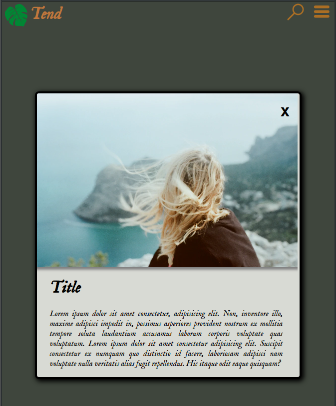
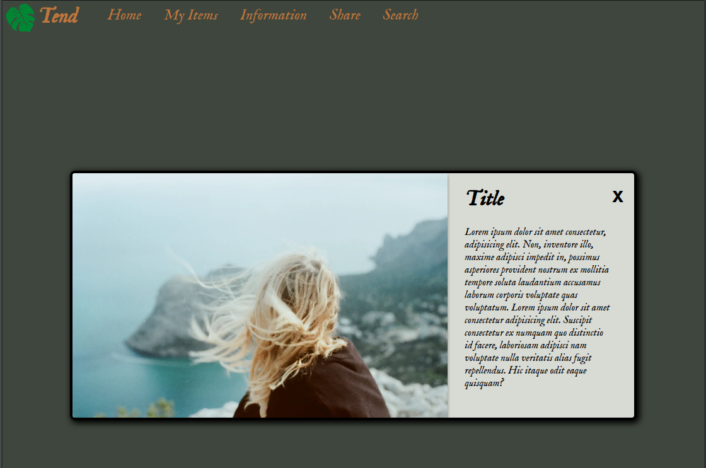
For the source code go to github.
I decided to use a custom font on this website. I downloaded it locally, then used 9.2.6 to add it to the website.
I also discovered another way to centre an element with 9.2.3.
Adding box shadows to my UI dramatically increased the visual appeal 9.2.4.
Since there were two edges of an image that touched the corners of a rounded container, I needed to individually round those two corners using 9.2.5.
Since there was an inner element that needed to scroll, I wanted to modify the scrollbar. I used 9.2.7 to accomplish this.
User stories are a very useful tool in the planning parts of software development. Putting yourself in the user’s shoes to determine what is important to them, and what features need to be implemented help create understanding, as well as the ability to prioritise what is important for these users.
Pre-designing UI within an application such as Figma saves a lot of time in the overall process. It is much easier to change a UI position, colour, etc. in such a program, rather than rewrite the CSS in the actual web page each time. I found this out after creating the first UI in Task 2, then subsequently using Figma in Task 3.
| Epic Stories | Acceptance Criteria | Priority |
|---|---|---|
| Epic #1: As a person with many plants, I would like to be able to keep track of the schedules for these plants so they can be healthy. |
|
High |
| Epic #2: As a person who is new to horticulture, I would like to get new information about plants so that I am informed about how to care for them |
|
Medium |
| Epic #3: As a social person, I would like to be able to share my plants, and interact with others, so that I am able to share experiences and ideas. |
|
Low |
| User Stories | Acceptance Criteria | Priority |
|---|---|---|
| User Story #1: As a user, I would be able to create a plant profile so that I can store information about my plants. |
|
High |
| User Story #2: As a user, I would like auto-generation of a schedule for my plants that I can adjust, so that I am able to see when I need to water/fertilize/re-pot my plants. |
|
High |
| User Story #3: As a user, I would like notifications about necessary actions so that I don’t forget to water a specific plant. |
|
High |
| User Story #4: As a user, I would like to be able to search for information on specific plants so that I am able to anticipate the level of care for a future plant, or properly care for a current plant. |
|
Medium |
| User Story #5: As a user, I would like to be shown new horticulture tips, so that I am able to learn about new topics and concepts. |
|
Medium |
| User Story #6: As a social user, I would like to discuss and exchange horticulture related ideas so I can expand my knowledge on more advanced topics, or ask more experience users for help. |
|
Low |
| User Stories | Acceptance Criteria | Priority |
|---|---|---|
| User Story #7: As a social user, I would like to share photos of plants I have grown so that I can proudly show off all my hard work |
|
Low |
| User Story #8: As a plant enthusiast, I would like to browse photos of other plants so that I can gain inspiration and enjoyment. |
|
Low |
| Sub Stories | Acceptance Criteria | Priority |
|---|---|---|
| Sub Story #1: As a user I would like to login or create an account so that I can store information for later. |
|
High |
| Sub Story #2: As a user I would like to input information about my plants so that I can reference it later. |
|
High |
| Sub Story #3: As a user I would like to interact with my plants so I can record times I have watered, fertilized, etc.. |
|
High |
| Sub Stories | Acceptance Criteria | Priority |
|---|---|---|
| Sub Story #4: As a user I would like to search for species of plants, so I can easily find what I am looking for. |
|
Medium |
| Sub Story #5: As a user I would like to get information for specific species. |
|
Medium |
| Sub Story #6: As a user I would like to get random tips of the day for plants that I am interested in. |
|
Medium |
| Sub Story #7: As a user I would like to learn the basics of horticulture to ensure I am doing things correctly. |
|
Medium |
| Sub Story #8: As a user I would like to post to the discussion forum so I can discuss and share ideas with others. |
|
Low |
| Sub Story #9: As a user I would like to message other users directly. |
|
Low |
| Sub Stories | Acceptance Criteria | Priority |
|---|---|---|
| Sub Story #10: As a user I would like to create a public profile for my plant. |
|
Low |
| Sub Story #11: As a user I would like to browse other plant photos. |
|
Low |
I used Figma to design one of the pages for my application. I designed the "Share Plants" page from my proposed web app. I decided on a fairly neutral, and natural colour scheme. Going through, I was able to identify a font that was
The end result was:

Much of this design can be reused throughout the web app, such as the navigation bar at the top, logo, etc. I will continue to use Figma to design the remaining pages of my web app.
I was able to get mock images from unsplash.com, which will be populated by real user images on the live version. The logo is a modified svg image from pixabay.com.
This task was helpful to become familiar with some of the media tags. The canvas tag in particular, I felt as though I have barely scratched the surface of what it can do. HTML has come such a long way from simply displaying text and is incredible what it can currently do by itself.
For task 4, I decided to play around with the video and canvas tag.
For the video tag, I used the previous template I was working on for my proposal site, but instead of an image, it had a video. This will allow users to be able to upload videos as well as pictures. Plant users love a good time lapse!
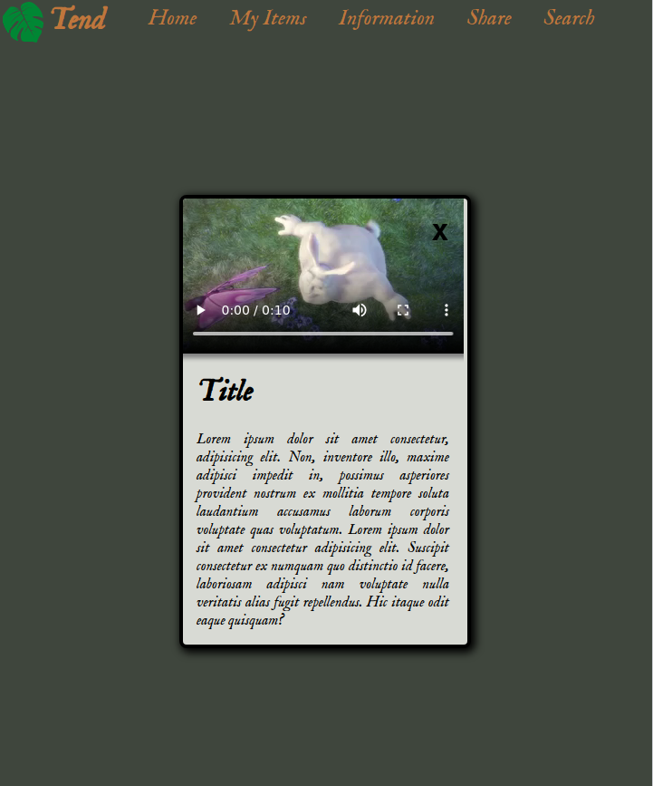
I also used the canvas tool, as well as some JavaScript to animate a green wreath around an idle mouse. The design needs a little work, but is a neat concept. This is achieved by finding the mouse with a "onmousemove" attribute on the canvas. This allows the position to be stored, and the countdown started. After an certain number of seconds the wreath begins forming. This makes use of the quadraticCurveTo, as well as some basic trigonometry/linear equations.
For task 4 source code, see Github.
To draw a basic line on the canvas, I used 9.3.3.
While playing around with the canvas, I tried to animate it by calling a function every x seconds. To accomplish this in JavaScript i used 9.3.4.
This week, I have come up with the basic idea for my web application. I will create an online website to store and share information about house plants. Part of the site will be a place to store information about current plants including water schedule, notes, etc. Another part will allow people to share experiences and photos of their plants.
Also throughout this weeks tasks, I have created one of the pages necessary, as well as worked on the mock-ups and user stories.
Next week I fill focus on finishing the proposal. This includes finishing the user stories, the proof of concept as well as the mock ups. I will then go over and review before submission. This should take approx. 8 hours.
This week extends our knowledge on JavaScript from 10.2.3.
Control statements allow us to create different paths that can be traversed in programs depending on certain conditions.
If statements check a boolean expression (something is either true or false) and if the result of that expression is true, the actions within that block will be executed. There is also an else if statement that can occur directly after an if statement. This statement only occurs if the if statement was false, and the supplied boolean expression is true. The last piece of this chain is an else statement. If all previous if and else if statements were false, the code within the else block will execute.
If(x > 0) {
return "x is a positive number";
} else if (x < 0) {
return " x is a negative number";
} else {
return "x is 0";
}
For statements that have many options, a switch statement would be a better option. In a switch statement, the interpreter will compare the variable against each value. Once a value matches the variable, the remaining code will be executed, or until a break is reached. A good code practice should be to always have a default case that runs if none of the other cases match. Here is an example of a switch statement from the lecture that I have modified:
switch(fruit) {
case 'Oranges':
console.log('$0.59 a pound.');
break;
case 'Mangoes':
console.log('$2.49 a pound.');
case 'Papayas':
console.log('$2.79 a pound.');
break;
default:
console.log('Sorry, we are out of these');
}
This demonstrates the importance of remembering the break. In this code if the fruit was Mangoes, Both the $2.49 a pound, and the $2.79 a pound messages would print. There might be cases when you would want multiple variables to perform the same action. In this case omitting the break is necessary.
Try/catch blocks is another control statement. Code within the try block is executed as normal, and if an error occurs, the code within catch block will run. This allows the program to handle the error smoothly. To highlight the importance of the try/catch; if an error occurred outside of a try block, the program would immediately stop (crash) and display an error code.
try {
file = readFromDisk();
} catch (error) {
console.log("File was not found")
askUserForNewFile();
}
Arrays are a collection of values stored in one variable (in contiguous memory). Elements of an array can be accessed by their index (which starts at 0 in JavaScript). The syntax in JavaScript is to use square brackets, for example: array[2] would give the third value of the array.
JSON is a format for storing data. It uses key-value pairs to describe the data. Basic data structures can also be nested inside keys using the curly brackets {} for an object, or square brackets for an array.
{
"name":"John",
"age":31,
"children" :["Sarah","Harry"],
"contact":{
"phone":123-232-2323,
"email":"john@john.com"
}
}
| > | Is true if the left value is greater than the right. |
|---|---|
| < | Is true if the left value is less than the right. |
| == | Is true if both values are equal. |
| != | Is true if both values are not equal. |
| && | Combines two logical statements, only true if both individual expressions are true. |
| ∥ | Combines two logical statements, true if either expression are true (or both). |
| & | Applies a bitwise AND to each value. That is goes bit by bit, through both variables and returns 1 if they are both 1, otherwise it returns the zero. The results are stored in a third variable. For example 10011 & 11001 = 10001. |
| The same as &, but it applies a bitwise OR. Returns 1 if either bit is one, but returns 0 if both are the same. | |
| ^ | The same as | but will also return 1 if both bits are 1. (Bitwise XOR) |
| === / !== | The difference between === and == is that === also checks type. For example 0 == "0" is true, but 0 === "0" is false. |
jQuery is a framework that shortens the amount of code needed. For example, instead of document.getElementById("id").hide();, jQuery allows a shorter command: $(’#id’).hide();. The $ means that it is a jQuery command.
Another area where jQuery helps reduce the amount of code is in network calls using AJAX. AJAX is Asynchronous Javascript And Xml. This allows to create calls to external urls, and then call function based on success or failure. This allows easy manipulation of the DOM based on queries.
JavaScript has many built-in libraries and class methods. These accomplish common tasks, so developers don’t have to constantly "re-invent the wheel".
These tasks help reinforce being able to learn and understand the documentation.
Task 1 was all about string manipulation. Since websites are about displaying information, manipulating strings occurs often. Since strings are objects in JavaScript, they come with some built-in methods. Some common methods are:
| string.length | The number of characters in a string. |
|---|---|
| string.splice() string.slice() | Two very similar methods. They return the characters between the specified start index and end index. The difference is that splice removes the character from the original string, while slice leaves the original string intact. |
| string.replace() | Finds the first argument within the string, and replaces it in the second argument. The first argument can also be a Regular Expression, making this function very powerful. |
| string.toLowerCase() string.toUppercase() | Turns every character either lowercase or uppercase respectively. |
| string.trim() | Removes any extra white-space at the beginning and the end of the string. |
| string.padStart() string.padEnd() | Ensures the string is a certain length by adding padding if necessary. padStart() adds the specified padding character to the beginning, and padEnd() adds the padding to the end. |
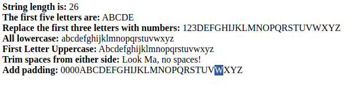
The source code for my task can be found on my Github.
The second task involved using Number methods and Array methods. These methods are similar to the idea of the methods in task 1, but they apply to numbers and arrays respectively.
| number.toString() | Changes the number to the type "string". |
|---|---|
| number.toExponential() | Returns the number in exponential form. |
| number.toFixed() | Returns the number, with a fixed amount of decimal places. |
| number.toPrecision() | Returns the number with a fixed number of digits. |
| parseInt() | Takes a string and returns it as a Number if possible. |
| Math.round() Math.ciel() Math.floor() | Round the number to the nearest digit. ciel always rounds up, floor always round down. |
| Math.random() | Gives a random number between 0 and 1. |
| array.toString() | Converts the array to a string. |
|---|---|
| array.join() | Same as toString, but can specify what characters to place in between elements. |
| Array.from() | Returns a new array from whatever is provided as an argument. Useful for duplicating arrays. |
| array.pop() array.shift() | Removes and returns the last or first element of the array respectively. |
| array.push() array.unshift() | Adds a value to the end or beginning of the array respectively. Returns the array length. |
| array.concat() | Merges an array passed as an argument into the original array. |
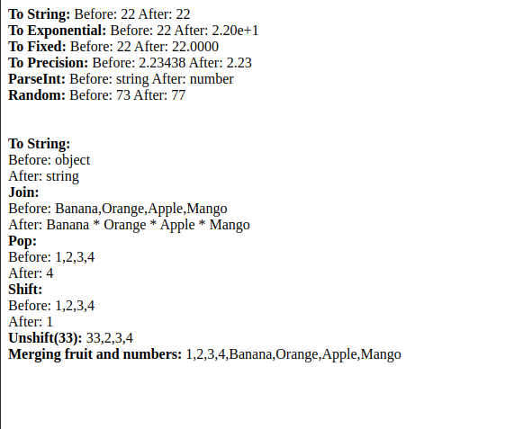
The source code for my task can be found on my Github.
JavaScript objects have methods for getting and setting internal values. This is an example of encapsulation, a main concept in object-oriented design. Instead of having access to the variables directly, the objects are interacted with using GET functions and SET functions. GET functions return the value of the variable. SET functions take the new value as an argument, and then changes the value of the variable internally.
Date is an object built into JavaScript that stores a particular date and time. This uses get functions to get either the whole date formatted in a particular manner, or parts of the date such as hours, months, etc. The set function of the date object allows the caller to set a particular part of the date such as hours, months, etc.
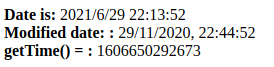
The source code for my task can be found on my Github.
Computed property is a property based on another property. It is a function that modifies another property and returns a value. This reduces the redundancy of code by reusing these functions instead of putting them directly in the template. Another benefit to using computed properties is that they are cached for better performance, and is only re-called when the original property is modified.
Computed Properties are assigned using the computed key inside the component object.
Watchers are a more generic version of computer property. The two are different because Watchers allow the observation of external variables and are not restricted to Vue Properties. This is useful when using asynchronous calls as the base data.
Watchers are assigned using the watch key inside the component object.
Vue allows classes to be dynamically assigned based on variables. An object is passed in to the attribute where the keys are the classes, and the paired values are the variables being evaluated. If the variable is truthy, then the class will be applied. Many classes can be put into the object.
Styles can also be assigned dynamically by passing in an object with style key-value pairs.
Class and Style bindings use the v-bind:class="" or v-bind:style ="" syntax respectively.
Conditional rendering allows the browser to render an element only a boolean expression is true. If true, then the element will be rendered. If not, the element will not be rendered.
Conditional rendering uses the v-if attribute in the html or templates. This can be combined with v-else-if and v-else to create multiple outcomes.
List rendering renders a component or template using each element in a list as the passed in value. For example, if there was a list of [1,2,3], it would render one element, and pass in 1, render the same element again and pass in 2, then finally render element once more and pass in 3. This is very useful if you have a list of items that need to be rendered and reduces the code needed to accomplish this.
This uses the v-for attribute in the html or templates.
This allows Vue to monitor for specified actions being performed on the element. For example v-on:click will run whatever function is given when the element is clicked. This also allows the direct modification of component data instead of a function (for example: v-on:click="counter += 1" would increment the counter on click). Methods can be written in directly, or placed in the methods object within the component.
Form input bindings allow Vue to directly link inputs to variables. Whenever the value of an input changes, the variable in the component is updated. This is done by placing the variable being updated into the v-model attribute on the input element.
Components allow reusing templates, methods, etc. based on different values being passed in. This allows many of these components to be created without having to retype the boilerplate code, methods, etc. This also also provides easy consistency when it comes to style.
A new component is defined in the JavaScript file. It gets created by calling Vue.component() and passing in the name of the component, as well as an object will all of the data, template, methods, etc..
This week I have completed the remaining parts of my proposal. I designed every webpage in Figma, meaning the implementation should be quite painless. I have planned out the layout of my code and am ready to get started.
Next week I must start creating my webapp using HTML/CSS/JS/Vue. Specifically I would like to target the Nav bar and Image gallery components. This are probably the more complicated components within the web app and also the most reused. This should take me 4 hours.
Files are too large to send all at once over the internet, it is impossible. Instead we break them up into many packets, and send them one at a time.
This layer is specific to each type of application and is how the applications connect to the internet. Each type of application will be given a port number. This allows many different services/applications to be running on a particular computer at one time. This also creates standards, so applications of the same type can communicate with each other effectively. An example of this is HTTP. This tells browsers and web servers how to communicate with each other. All of this information is bundled as a header on the data packet, and passed to the TCP layer.
If the application layer is how applications communicate, then the TCP layer is how computers communicate. This is a set of standard pieces of information put together in a very specific format. This includes information like the number of packets being sent, a checksum to ensure no corruption, etc.
Now that we have all the information, the next part to be applied is the IP address or WHERE to send the packet. This is unique for each computer in the world, and is bundled on top of the tcp layer.
Finally the data-link layer is associated with the physical machines themselves. This is how the short jumps are addressed, from router to router as the message travels to its destination.
DNS or Domain Name System is an electronic address book for websites. Instead of having to remember the IP addresses of the web server you would like to visit, it allows users to remember more human-friendly addresses, such as www.deakin.edu.au. This is similar to a phone book, where instead of remembering the phone number, you only have to remember the persons name.
Each time before connecting to a server, your computer must first get the IP address from the DNS server, so that it knows where to send the data.
The internet isn’t one solid "thing". Instead it is made up of many computers/routers/etc. To be able to communicate with another specific computer, the message must pass through a chain of many other routers. This uses the MAC address discussed in 5.1.3.3 and the IP address discussed in 5.1.3.2.
Starting from the source computer, each computer finds a router which is closer to the end destination. The message is then sent to a router that is closer to the destination ip address using the router’s mac address. Then that router finds a closer router and passes the message along. This continues until the message finally gets to the destination. Usually the first hop will be to your ISP, then a second one will be to a larger router(or groups of routers) called an NSP (Network Service Provider). From here they can connect to other NSPs via an NAP (Network access Point) or MAE (Metropolitan Area Exhanges).
The beauty of this is two fold. First of all, there is no "set path" that a message must travel. This helps to relieve congestion within the network. Secondly, if there is a break in the chain, it is very easy for the routers to reroute the message to another router, as long as it is closer to the destination.
Declarative rendering in Vue is about dynamically creating webpages based on templates. In the templates, placeholders will use double curly brackets {{}},with the placeholder name being inside. This placeholder name will map to a variable in the Vue/Javascript code. During rendering, Vue will grab the variable value and place it in the placeholder. This way, each time the user visits the webpage, it can present different information based on their query without writing millions of possible HTML pages.
This becomes even more powerful, when different images, links, etc can be loaded into the template. So that the same page layout can look drastically different.
For evidence of the completion of this tasks, I will provide the work in Vue I did for my proof of concept. I used declarative rendering throughout the application.
See examples of my proof of concept at:
https://github.com/BrandonMurch/SIT120/tree/main/Assignment%201/proof-of-concept
Conditionals are a way of selecting whether to display a component or not. If the particular variable is true, the component will be rendered. If not, the component will not be rendered at all. The syntax for this within Vue is v-if, v-else, v-else-if. Within my project I used this for a few things. Firstly, I used it in my main profile page as a mock router to switch between pages before I implement Vue-Router. I also used it to render the pop up if a plant was selected. If there was no plant selected, the pop up would not appear. Finally, another use was to hold off loading certain elements until the image was loaded, presenting a cleaner webapp.
There is an alternative syntax of v-show which still renders the component (unlike v-if), but hides it using CSS.
Loops are used for rendering multiple elements, with a single template element. I used this frequently to reduce the amount of code. For example, instead of creating each navigation link, I created a template, then looped over an array to insert information for each link. I also used it within my Image Gallery to place my columns and images within them.
See examples of my proof of concept at:
https://github.com/BrandonMurch/SIT120/tree/main/Assignment%201/proof-of-concept
I focused on my proof of concept this week. I was able to complete the explore portion of my application. Within this section I was also able to create the following components: ImageGallery, SearchBar, ImageCard, NavigationBar, ContactForm, PopUp, and MenuIcon.
While doing this, I also explored several more advanced topics within Vue.
Within Vue there are ways to create custom events. These react the same way as native Vue events, such as @click or v-on:click.
To create a custom event, Vue allows the use of the emit method, with the following syntax: this.$emit(’customEvent’). This will send the custom event to the parent component.
To react to the event in the parent component, simply use the same syntax as native events. Continuing the example of ’customEvent’, the syntax used is @customEvent="...".
A second argument can be passed into $emit to pass a variable through to the parent component. This allows the ability for two way binding, where two variable can be the same values in both the parent and child. Changing the value in one, will change the value in the other.
Vue allows functions to be called at certain points relative to the creation of a component. Some options are:
create - Data, properties, etc. are available, but the element has not been rendered.
mounted - Element has been rendered in the DOM for the first time.
updated - A data change has caused the component to update.
unmounted - The component has been destroyed, removing it from the DOM, and memory.
More hooks can be found here: .
Slots are a way for full components or html to be easily passed into another component. In addition to the default slot, slots can be named for multiple slots in one component.
To define the slot space, the slot element is used. To name it, use the name attribute. For example: <slot name="slotName" />.
In the parent component, the template element is used to define what should be put inside this slot. To choose which named slot to use, the v-slot:name attribute is used. So to place html in the previously mentioned slot, the syntax would be <template v-slot:slotName > ... </template>
Refs give developers a way to reference components without having to use id or class. This is done by first setting the ref attribute on the component using a string. Then the component can be grabbed by using the this.$ref.referenceString were referenceString is the string used in the attribute.
Unrelated to Vue, I also looked into the following:
CSS Transitions (9.2.8)
Modifying the scrollbar with CSS (9.2.9)
"Debounce" (9.3.5)
Array Filter (9.2.9)
This week I would like to incorporate Vue-Router into my program, and start creating the other parts of the website (My Plants, and Learn). The main reusable components I will need for this are lists to display cards for comments, articles, etc. Another important part will be to create the interface for adjusting plant settings. I suspect this all will take 4 hours.
The new concept for this week was UI design patterns. Two of the most well known are MVC and MVVM.
Model View Controller was the original Model-View design. This model looked to solve how to structure large front end codebases, and separate areas of concern. As the name suggests it was made of up three components, a model, a view and a controller.
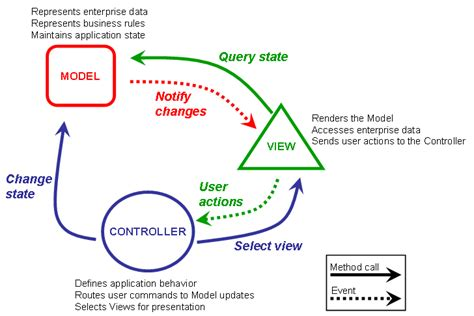
The controller handles all user interactions or events. When a button is clicked, the controller will decide what to do and modify the model accordingly. The controller is also in charge of which view to present to the user. This way many different views could be used depending on the situation.
This contains the data that will be loaded into the webpage. This is the component that will get information from a back-end or database, and is in charge of the applications state.
What the user sees. Using the observer pattern, the view is notified when a change occurs to the model, and then the view will fetch the new data.
Model View View Model builds upon MVC. The main benefit of this is being able to reuse the business logic for multiple view-controllers, making the controller more UI focussed.
MVVM considers the view and the controller to be tightly coupled. This means that view handles both the displaying of information, as well as user inputs and events. The view can also pull data from the View Model and trigger methods within the view model based on user input.
The new component added when compared to MVC. It works between view and model. It handles all the logic and state within the application. View-model is unaware of view. Any updates within the view-model will be announced to subscribers, and then the subscribers can grab the update.
This is very similar to the model in MVC. Model is unaware of view or view-model. It simply supplies the data to the application and modifies this data on request.
Components are ways to reuse pieces of code. Both presentation code and logic can be reused within elements that perform similar tasks. This allows less repetition of code and the ability to build applications much quicker.
The syntax for defining a component is:
[global-registration]
Vue.component('component-name', {
template: '<h1>This is a component</h1>'
})
Then to use this component simply use the tag in the html like so:
<component-name />
This will output the header, "This is a component", into the DOM.
I have already created a few components in my project. See
https://github.com/BrandonMurch/SIT120/tree/main/Assignment%201/proof-of-concept/src/components.
I have explored Vue and implemented concepts so far in my project. See:
https://github.com/BrandonMurch/SIT120/tree/main/Assignment%201/proof-of-concept/src/.
To handle user input the v-on or @ keywords can be used. This can be used with many native events such as click. It can also be used for custom events. I have described such events here: 5.3.1.1.
These events can either call methods in the methods object or they can modify properties within the data object directly.
As with previous tasks, I have also used event handling throughout my project. A specific example is watching for clicks on buttons using @click within the PopUp component.
https://github.com/BrandonMurch/SIT120/blob/main/Assignment%201/proof-of-concept/src/components/PopUp.vue
With Vue, components can be registered globally ([global-registration]), or locally. To register a component locally, just store the component in a local variable like so:
const component = { .... }
Alternatively Vue components can be placed in their own .vue file. Their declaration is handled implicitly, and the file can contain three tags [template, script and style] which contain the relevant HTML, JavaScript and CSS respectively.
If we just used components with the same values every time, they wouldn’t be very reusable or useful. By defining options that can be passed into the component as "props", components become much more useful and versatile.
Using the v-bind keyword we are able to pass in this data. If the component accepted a prop message, then to pass in a message, use v-bind:
<component-name v-bind:message="This is a message!" />
The shorthand for v-bind would be simply :message="..."
See 5.3.1.1 for custom events and 5.3.1.3 for slots.
Putting elements inside the <keep-alive> element, as the name suggests will keep the component alive. That is, the component will not be destroyed. This helps with loading times on elements that are frequently switched between, or whose information won’t change.
Components can be rendered asynchronously. An example of this would be when the component renders only after information is received from the backend server. These components can even load other components while they are loading, or if there is an error.
There are a few ways to accomplish this within Vue. The first is to return the component as a promise resolve:
Vue.component('async-webpack-example', function (resolve) {
require(['./my-async-component'], resolve)
})
Another is dynamically importing the component:
Vue.component(
'async-webpack-example',
() => import('./my-async-component')
)
Finally Vue can also handle the loading, errors, delay and timout of these async components using the following:
const AsyncComponent = () => ({
// The component to load (should be a Promise)
component: import('./MyComponent.vue'),
// A component to use while the async component is loading
loading: LoadingComponent,
// A component to use if the load fails
error: ErrorComponent,
// Delay before showing the loading component. Default: 200ms.
delay: 200,
// The error component will be displayed if a timeout is
// provided and exceeded. Default: Infinity.
timeout: 3000
})
There are cases when the strict nature of Vue needs to be broken, giving more access to the developer. These cases are very rare, and have serious drawbacks, so they should not be used lightly.
Within Vue, any subcomponent can reference the root component with $root. This is particularly handy when using the root as a store.
Similarly, $parent can be used to access the parent component. This is generally reserved for very special cases, and is not recommended for regular use.
A way to avoid prop drilling (passing information down multiple layers of components) is to use the provide and inject options. In the parent use the option provide to supply data or method. Then within the child using inject, the child will be able to access the provided data/method.
Event listeners can be programatically managed within Vue. There are three options: $on to add an event listener, $once to add an event listener that only listens for the first event and $off to remove an event listener.
The $forceUpdate method can be called to manually force an update on the component. This is primarily if there is external data that causes an update.
I decided against working on my web app this week until I receive the feedback from my proposal to ensure I am working in the right direction. I will use this time to get ahead on other courses so that I can focus on my application next week.
This week I would like to incorporate Vue-Router into my program, and start creating the other parts of the website (My Plants, and Learn). The main reusable components I will need for this are lists to display cards for comments, articles, etc. Another important part will be to create the interface for adjusting plant settings. I suspect this all will take 4 hours.
Data binding describes how data is passed between the model and the view. One-Way binding means that data only travels one way. For example, data in the model, can be passed to the view, but the view cannot update data in the model. In Vue, this would be the v-bind directive, where information is only passed from the parent to the child.
Two-way binding on the other hand is bi-directional. That means as before, the data passes from the model to the view, but now the view can directly update the data in the model. In Vue, this is the v-model directive. An input field takes in a value from the parent, and then returns any updates. This means that the source of truth lies solely in the parent component.

v-model can be manually implemented as well. Depending on the input type, different directives can be used. For example input would use v-bind:value to pass the value to the input, and then v-on:input event to update the value whenever the input changes.
Vue Router is an easy way to manage url paths within an application. There are three main steps to using Vue Router.
The first is setting up the router. The router can be set up in the main.js, or more cleanly it its own JavaScript file and then imported into main.js. The main options needed when setting up the router is the possible routes, and the history. There are many other available options to configure the routers further. Here is an example of a router setup:
// 1. Define route components.
// These can be imported from other files
import Home from './components/Home';
import NotFound from './components/NotFound';
const About = { template: '<div>About</div>' }
// 2. Define some routes
// Each route should map to a component.
// We'll talk about nested routes later.
const routes = [
{ path: '/', component: Home },
{ path: '/about', component: About },
// A general path for any unmatched path, which redirects to a not found component.
{ path: '/:pathMatch(.*)', name: 'NotFound', component: NotFound },
]
// 3. Create the router instance and pass the `routes` option
// You can pass in additional options here, but let's
// keep it simple for now.
const router = VueRouter.createRouter({
// 4. Provide the history implementation to use. We are using the hash history for simplicity here.
history: VueRouter.createWebHashHistory(),
routes, // short for `routes: routes`
})
// 5. Create and mount the root instance.
const app = Vue.createApp({})
// Make sure to _use_ the router instance to make the
// whole app router-aware.
app.use(router)
app.mount('#app')
// Now the app has started!
Modified from .
Setting up Vue Router is, by far, the most complicated part. To use Vue router, two main tags are needed. The first is <router-view> wreflectshich places the selected component (by its corresponding route), and renders it inside. The other is <router-link>, which replaces the <a> tag, to be able to work seamlessly with Vue Router. The to="target" attribute is used to choose which path to go to on click.
Vuex is a great way to share information within the entire application. Vuex will create a "store" where information will be stored in one place.
Vuex uses the "State Management Pattern". To understand this pattern, it is useful to first understand the naive approach. This approach is to simply store the data in a variable. If this method is used, any component can access, and modify the data. There is no way to keep track of who has modified the data, if the component has permissions to modify the data, and what modifications are allowed. For example, if there is a "personAge" property in the store, there is no way to prevent a user from entering "Donkey". The "State Management Pattern" addresses this by creating actions that can be performed, and certain variables that can be passed in. If a component "commits" one of these actions, the store is then able to verify the data coming in (making sure it is a number for the previous example), make modifications if necessary, and then place it within the appropriate variable. With this pattern, logs can also be created every time the store is modified.
To use the store, there are multiple categories of actions that can be defined. Getters are functions that return a value within the store. This could also be a more complicated function, for example within the store could be firstName and lastName, and a getter function could be getFullName, which would concatenate firstName and lastName together. A code example:
const getters = {
username: (state) => {
console.log(state)
if (state.isLoggedIn) {
return state.user.name;
}
throw new Error("There is no user logged in.")
}
}
This getter attempts to get the username of the logged in user. If there is no user, it throws and error.
Another category of actions that can be defined are mutations. Mutations are a way of changing the state of the store. This category was provided in the earlier example of setting personAge. A code example:
const mutations = {
logUserIn(state, name) {
state.isLoggedIn = true;
state.user.name = name;
}
}
This logs a user in and also sets the isLoggedIn boolean to true;
Actions call mutations. The difference between the two is that mutations are synchronous, while actions can be asynchronous. For example, an action could be an asynchronous call to a server for more information, which then calls a mutation to commit the information once it is loaded. An example from Vue:
actions: {
incrementAsync ({ commit }) {
setTimeout(() => {
commit('increment')
}, 1000)
}
}
which increments a counter only after 1 second has passed.
With Vue 3, the composition API is a new way to set up components.
The Composition API replaces the data function, the methods object and more, within a component. This allows for two things to happen, first of all this allows for similar concepts to be group together. In the previous API, you might have the following code:
export default {
name: "NavigationBar",
data() {
return {
isMenuOpen: false
links: [...]
}
},
methods: {
toggleMenuOpen() {
...
}
addLink() {
...
}
}
}
The problem with this is that there are two separate areas of concern. One that is handling the state of whether the menu is open or not, and the other that is handling which links are being displayed. It would be nice to group these together. This is where the composition API comes in. It allows these different parts of the component to be grouped in on setup function:
export default {
name: "NavigationBar",
setup() {
let isMenuOpen = false;
toggleMenuOpen() {
...
}
const links = [...]
addLink() {
...
}
return {
isMenuOpen,
toggleMenuOpen,
links,
addLink,
}
},
}
This nicely groups the two areas of concern. This also allows easy separating groups of like variables and functions into separate files, which can then be imported easily. This increases reusability and the clarity of the code.
Vue transitions work closely with directives such as v-if, or v-for. Transitions can be used with v-if for example, to add transitions when the component leaves or enters the DOM. This would use the transition tag as follows:
<transition name="fade">
<MyComponent
v-if="booleanStatement"
/>
</transition>
The transition can be named anything the user desires. It can even be dynamic. This connects it to a set of style attributes that describe how the transition will look. For the example of this fade transition the style would look like:
.fade-enter-active{
transition: all 0.5s !important;
}
.fade-leave-active {
position: absolute;
transition: all 0.5s;
}
.fade-enter-from,
.fade-leave-to {
opacity: 0 !important;
}
.fade-enter-to,
.fade-leave-from {
opacity: 1 !important;
}
fade-enter-from and fade-leave-to refer to the states that occur one frame before entering and after leaving. This means that the element will both have a opacity of 0 before/after. fade-enter-to and fade-leave-from handle what the element will look like directly after entering or before leaving. fade-enter-active and fade-leave-active handle the animations during the transition. Any custom transitions can be created by using the NAME-enter-from, etc. templates and then placing that NAME in the name attribute of transition.
Vue Transitions also include a transition-group tag. This handles the transitions for lists of elements that use v-for to render. This will animate when new elements are added to the list, or removed.
transition group uses the same style templates as transition, but adds one more option for NAME-move, which will add a transition for elements shifting to accommodate new elements. For example, the following will take 0.5 seconds to slide an existing element down/up:
.fade-move {
transition: all 0.5s ease;
}
This task was all about the basics of two-way data binding in Vue. Create a variable that keeps track of an input element.
I used v-model within my contact form in my project.
https://github.com/BrandonMurch/SIT120/blob/main/Assignment%201/updated-proof-of-concept/tend/src/components/TheContactForm.vue
The output looks like:

Checkboxes are an important part of a form and can either represent a boolean value, or the ability to choose multiple values.
I used a checkbox within my login form. Clicking it will allow the user to be remembered by the application and not have to login again on that machine. It will contain two-way binding to a rememberMe variable.
https://github.com/BrandonMurch/SIT120/blob/main/Assignment%201/updated-proof-of-concept/tend/src/components/TheLoginForm.vue
The output looks like:

Being able to render options dynamically for a select element, saves a lot of repeating code. Instead a list of strings or a list of objects can be passed in.
I used a dynamically rendered options list within my contact form in my project. Users could select the reason they were contacting the company.
https://github.com/BrandonMurch/SIT120/blob/main/Assignment%201/updated-proof-of-concept/tend/src/components/TheContactForm.vue
The output looks like:
Modifiers add quick ways to perform common tasks. It saves code, and energy not having to reimplement the same common features over and over.
I used trim within my SearchBar input to remove extra white spaces and make matching entries much easier.
https://github.com/BrandonMurch/tend/blob/main/src/components/SearchBar.vue
The output looks like:

This week I have successfully added in both Vue Router and Vuex. Vue Router allowed me to use paths within the url to visit certain pages. Vuex is a central store that allows me to store the user login information (such as if a user is logged in and what their name is). I have also implemented the login page which allows the user to login to their account.
For design, I have implemented more transitions throughout my application to make it more polished. Reflecting the purpose of the design, this softens the harsh default transitions.
Finally I have worked on deploying my app so far at tend.brandonmurch.com.
Next week I would like to create the MyPlants page, and necessary sub-pages. This will allow the user to view all their plants, upload new plants, view their notifications and change settings.
Components can be registered in three ways: Global, Local, and Single FIle.
Global Components are available everywhere within the Vue Application. A global component can be registered with the following syntax: Vue.component(’my-component’, ENTER COMPONENT DETAILS... ). This means that anywhere within the HTML, a new component can be registered using <my-component>.
On the other hand, locally registered components can only be used within the scope in which they are registered. For example:
<script>
var ComponentA = {...};
new Vue({
el: '#app',
components: {
component-a: ComponentA,
}
})
</script>
Now within the Vue app, the component can be used as component-a. However if we were to declare a second component component-a would not be available inside:
<script>
var ComponentA = {...};
var ComponentB = {
template: ' <div><component-a> <!-- THIS WON'T WORK! --> </component-a></div>'
}
new Vue({
el: '#app',
components: {
component-a: ComponentA,
}
})
</script>
Single-file components are almost a combination of global and local components. Single file components are stored in a .vue file and are available anywhere within the Vue application but only if that vue file is imported. The following syntax can be used within the a JavaScript portion to import a component: import ComponentName from ’./ComponentName.vue’.
Within the file, there should be three tags <template>,<script> and <style>. template holds the template information such as HTML, or custom components. script holds all the custom JavaScript. It also is where the component is initialised using an object with fields such as data, name, methods, etc... style holds all the relevant CSS. The scoped modifier can be used to ensure the styles within this tag only apply to this component, even if other tags have the same classes.
The trade-off for the ease-of-use of single file components is the complexity of the setup. These cannot simply be inserted into regular HTML and require the use of Module Build systems like webpack/npm, etc.
Here is an example of a basic component:
<template>
<CustomWrapper>
<h1 class="title"> {{ title }} </h1>
</CustomWrapper>
</template>
<script>
import CustomWrapper from './CustomWrapper.vue'
export default {
name: "MyComponent",
components: { CustomWrapper },
data() {
return {
title: "My Title",
};
},
}
</script>
<style scoped>
.title {
color: red;
font-weight: bold;
}
</style>
For these topics please see 6.2.4 where I have discussed them already.
Within my project I have opted to use single-file components. Especially when building a fully vue-focused application, I find this to be the cleanest and most organized way of creating components.
I have included a picture of my project so far with different coloured squares highlighting different components.
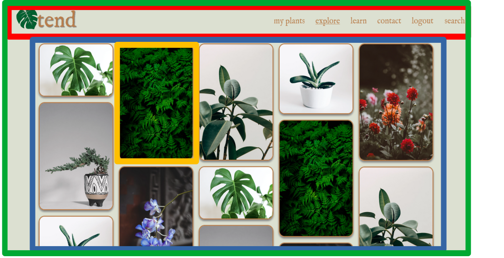
I have used props throughout my project to increase the reusability of my components.
This screenshot shows the same component (CardImage) but which contains two different images that were passed in using props.
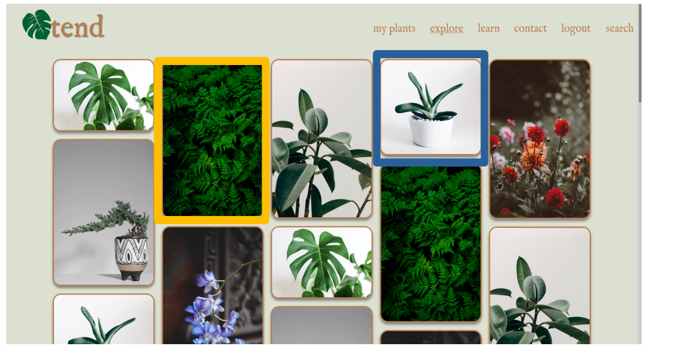
One of the many custom events I have created in my application is the moreImages event. This application is created by the ImageGallery component. When the user scrolls to the bottom of this component, the image gallery emits the call for more images. This allows the parent node to provide more images if it is possible.
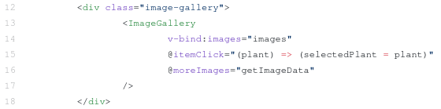
I used a named slot within the DropDown component. In the future, this will allow me to specify multiple components all within the one drop down menu.
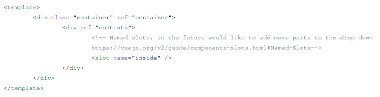
This week I have completed the MyPlants portion of the website.
Next Week I would like to complete the "Learn" portion of tend, and populate it with a series of fake articles, questions and answers.
Throughout this course, if there is a code snippet I have found useful, I have put it in this section for easy reference. They will also be referenced in the practical task in which they were discovered.
| color | Color of text. |
|---|---|
| background-color | Color of element background. |
| height | Height of element. |
| width | Width of element |
| font-size | Size of font (can be in pixels, rem (relative font size), or pre-set (small, medium, etc.)) |
| font-family | Specify the font, or family of fonts. Multiple can be specified, with the earlier fonts taking priority. |
| position | How the element is positioned in the document. Some possible values: relative(Follows the standard flow), absolute(placed in a particular location in the document), fixed (placed in a particular location on the screen.) |
| left, right, top, bottom | How far from the left/right/top/bottom the element is. |
| text-align | How the text within a p or h# tag are aligned (left, center, right) |
| border | How the border of the element looks. Uses the value format of "size style color" |
To horizontally center any element:
element {
postion: relative;
left: 50%;
transform: translateX(-50%);
}
Any element can also be centred horizontally(by using top, and translateY) or both (using top, left and translate(X, Y)). This moves the element half way across the screen, and then moves the element back half of its width. The end effect being that it is centred on the screen.
Elements can also be centred by modifying their parent with the following syntax:
parent-element {
display: flex;
justify-content: center;
align-items: center;
}
This works especially well if there is only one child of the parent.
To give elements depth and make them look more realistic, they can be given a depth by applying a shadow.
The syntax for applying a shadow is:
box-shadow: offset-x, offset-y, blur-radius, spread-radius
offset-x, and offset-y shift the shadow horizontally and vertically respectively. If positive, the shadow will move towards the right/bottom and if negative will shift towards the left/top.
blur-radius is used to blur the shadow. The greater the value, the larger the blurred portion of the shadow. The lowest value is 0, where the shadow is a sharp line.
spread-radius changes the size of the solid portion of the shadow. Larger values create a shadow that is larger than the element itself. A negative value will create a shadow smaller than the element.
border-radius is a property that allows corners to be rounded. Individual corners can be rounded separately from the rest of the element with one of a few self-explanatory commands:
border-top-left-radius, border-top-right-radius, border-bottom-left-radius, border-bottom-right-radius.
To add a custom font, they have to be either available locally, or from a website. The following syntax is used:
@font-face {
font-family: "Name of Font",
src: url("www.fonts.com/name-of-font.tff") format("tff");
}
To change the appearance of the scrollbar, a few different pseudo-selectors have to be used:
element::-webkit-scrollbar {
width: 4px; /* width of the entire scrollbar */
}
element::-webkit-scrollbar-track {
background: orange; /* color of the tracking area */
}
element::-webkit-scrollbar-thumb {
background-color: blue; /* color of the scroll thumb */
border-radius: 20px; /* roundness of the scroll thumb */
border: 5px solid black; /* creates padding around scroll thumb */
}
element {
scrollbar-width: thin; /* "auto" or "thin" */
scrollbar-color: blue orange; /* scroll thumb and track */
}
The ::webkit-* pseudo-classes are for Chrome, Edge, Safari and Opera, since they don’t support the standard scrollbar-width and scrollbar color.
;
It is possible to animate transitions between CSS changes. This is accomplished by using the transition attribute. The transition command is as follows:
transition: <property> <duration> <timing-function> <delay>
Property is which CSS properties will be affected by the transition. Duration is how long the animation will take to complete. The duration can either be in seconds (2s) or in milliseconds(200ms). Timing functions is how the timing maps to the animation. For example there is ease-in which is slow at the beginning, and then faster towards the end of the animation. Finally the delay value delays the start of the animation.
One thing to note is that not all styles can be animated. For a complete list of animatable styles see .
To modify the appearance of the scrollbar, there is two different sets of attributes (one for Chrome/Edge/Safari/Opera and one for Firefox).
For Firefox, there are two CSS Properties available:
scrollbar-color: <thumb colour> <track colour>
scrollbar-width: <auto, thin or none>
Alternatively, other browsers use the ::-webkit-scrollbar pseudo element. This allows styles to be applied to the different parts of the scroll bar. The possible elements are:
::-webkit-scrollbar - The entire scrollbar
::-webkit-scrollbar-track - The track of the scrollbar (the background)
::-webkit-scrollbar-thumb - The thumb of the scrollbar (the part that slides)
::-webkit-scrollbar-thumb: hover - Modify the thumb on hover.
Upon fully loading the window, the provided function will then be called. This ensures the elements referenced within the function will be able to be found within the DOM. This is particularly useful with Vue, since there needs to be a rendered element for Vue to be attached.
To round to a specific number of decimal places, use the toFixed(places) method on an number variable. For example:
let number = 9.43667;
number = number.toFixed(2);
// number == 9.43;
To draw a line on the canvas:
// Get the canvas element from the document
const canvas = document.querySelector('#canvas');
// Adjust the height and width as necessary, this fills the screen
canvas.width = window.innerWidth;
canvas.height = window.innerHeight;
// Get the kind of canvas (2d, webgl, etc.) (webgl is 3d)
const ctx = canvas.getContext('2d');
// Begin drawing.
ctx.beginPath();
// Place the cursor at x,y.
ctx.moveTo(x, y);
// from (x, y), draw a line to (newX, newY).
ctx.lineTo(newX, newY);
// Select the width of the line.
ctx.lineWidth = 3;
// Assign a colour value
to draw.
ctx.strokeStyle = "#123456";
// Draw the line on the screen.
ctx.stroke()
JavaScript does not have a simple delay() function which many other languages have that blocks the execution of code for a certain amount of time. Instead there is a bit of a hack to delay code as necessary. An empty array is first initialised. Each timer is set by supplying a function that is to be called when the function expires, and the amount of time. Essentially this means wait x amount of time, then call the function. To call a function every x milliseconds, construct a for loop, then multiply the time-value by i. See the syntax below:
const timers = [];
// Calls the function after a delay.
timers.push(setTimout(function, time-value));
// Calling multiple delays, this will call the function every time-value milliseconds.
for (let i = 0; i < max; i++) {
timers.push(setTimout(function, time-value * i));
}
// To clear the first timer before it executes.
window.clearTimeout(timers[0]);
Debounce is a function that stops functions from being called over and over. An example of a useful application of this is when the user resizes the window. It means the browser will wait until the user is finished moving the window before calling the function. This can give a big boost to performance by not calling expensive functions unnecessarily.
The following higher-order function can be used:
function debounce(func, timeout = 300){
let timer;
return (...args) => {
clearTimeout(timer);
timer = setTimeout(() => { func.apply(this, args); }, timeout);
};
}
What happens is when this function is called, it creates a timer, that after elapsing will execute the function passed as an argument. When this is called a subsequent time, the timer is reset, and thus the passed function will only execute when timer is able to fully elapse.
JavaScript observers are an easy way to monitor for changes within the DOM. This also benefits from not being tied to any one framework, as it is a generic web API.
These work by taking a function into their constructor. Whenever the observer is triggered, it will execute the provided function. Then this Observer is stored in a variable, and the observe method can be called, which takes the element being observed.
The intersection Observer is used to check to see if an element is "intersecting with the viewport". In layman’s terms, this means can the user see the element. Two different options can be selected for what intersecting means, the first is partial intersection (the user can see part of the element), and the other is complete intersection (the user can see all of the element). An example:
const observer = new IntersectionObserver((entries) => {
if (entries[0].isIntersecting === true) {
console.log("I can see you!")
}
});
observer.observe(document.getElementById("target-id"))
This will track to see if the element with the id "target-id" is intersecting the viewport, and when it does, it will print "I can see you!" to the console.
Mutation Observers watch for any mutation within the DOM. This means that any changes to style, or content for example, will be noticed. There are a few options, one of which is to only watch the element that has been passed in, another is to only monitor the element and its children, and the last is to monitor the entire subtree underneath the element.
The code is fairly similar to a IntersectionObserver, but instead MutationObserver constructor is used. Config files are places within the observe method as a secondary parameter to the element. A possible config might be:
observer.observe(targetNode, { attributes: true, childList: true, subtree: true });
Observers must be disconnected when they are finished. This typically is when a component is unmounted from the DOM. This will prevent memory leaks. To disconnect an observer simply call observer.disconnect();)
Web development requires the use of three languages: HTML, CSS and Javascript. These three languages work together to tell the browser how a website should look and act. By understanding them thoroughly, we are able to create high quality, responsive websites, that users will find visually pleasing and easy to use.
Hyper Text Markup Language is a structured way to store the information which will be displayed on a webpage. More simply, HTML tells the browser WHAT to display.
HTML uses tags to hold the data. An example of a tag is: $\color{blue}<body>\color{red}</body>$. The opening tag in blue, has a matching closing tag in red. Relevant information is placed between the two tags. For our body example earlier, the browser will know that the information for the body will be between the opening body tag and the closing body tag.
Attributes for tags can be set within the opening tag. An example of using attributes to assign a class to a p element would look like: <p class="text">. A class groups a number of elements together, while another attribute id refers to only one element. There are many other HTML attributes to help us configure our elements. For a large list of possible attributes. visit .
To get started writing an HTML document, there is some boilerplate code that must almost always be present:
<!DOCTYPE html>
<html>
<head>
<title>Title</title>
<script src="INSERT LINK TO JAVASCRIPT FILE HERE"></script>
<link rel="stylesheet" type="text/css" href="INSERT LINK TO CSS FILE HERE">
</head>
<body>
INSERT HTML TO DISPLAY HERE.
</body>
</html>Notice the indentation! To make this code easier to read, any tag that is inside another tag will be indented further. For example, it is easy to see that the head tag is inside the html tag. See the below table for descriptions of each tag.
P4cmp11cm Tag & Description
<!DOCTYPE> & This is to let the browser know that this is a current HTML5 document. Previous versions of html will have different codes to insert here.
<html>...</html> & This is the html document, all information will be inside this tag
<head>...</head> & This contains information that will not be displayed within the webpage itself.
<title>...</title> & The title to the webpage. This will be displayed either in the browser’s title bar area at the top of the window, or the tab area.
<script>...</script> & This can either contain JavaScript code directly, or have a src attribute that links to an external file (either locally, or from a http link)
<link>& This links to some exterior document. The most common use of the link tag is to link to an external css file, but other documents that might be linked are icons, and licenses.
<body>& Body contains all the information that will be displayed on the website itself.
<p>...</p> contains a paragraph of text.
<h#>...</h#> contains a header. # is replaced by the size of header, 1 is the largest and 6 is the smallest.
<div>...</div> is a generic tag that creates a container for other elements.
<a href="...">...</a> creates a hyperlink to another page. href is the link, and the text between the tags is displayed to the user.
There are a few tags which don’t require a closing tag. These tags get information through other means, like the <img /> tag, which knows what image to render using the src attribute.
<img src="image location"> loads an image from either a website, or local storage.
Tables are a great way to organise information on a website. They act the same way as tables within commonly used word processors such as Microsoft Word with columns and rows.
The table is broken into two parts: <thead> which uses <th> to create header cells, and <tbody> which uses <td> to create regular cells. The graphic below provides a clear understanding of the structure of a table. Remember, the values for each cell are placed in the inner most tags (th and td).
Forms are a collection of input fields within HTML. The user can enter different types of information depending on the type of input field. When the form is submitted, the browser will collect all the inputs and either send them to a url (if the attribute action is present on the form), or will send them to a JavaScript function (if the attribute onsubmit is present). An example of a form with the inputs name, age and location might be: [form-html]
<form onsubmit="submitForm(event)">
<label for="name">Name</label>
<input type="text" id="name" size=20 maxlength=20>
<label for="age">Age</label>
<input type="number" id="age" max=120>
<label for="location">Location</label>
<input type="text" id="location">
<input class="button" type="submit" value="Submit">
<input class="button" type="reset" value="Cancel">
</form>
Which would output:
| [fig:email-error] | |
| Input fields can also be displayed as buttons, for example if the input type is submit or reset as seen in the example form above. | |
| For accessibility reasons, each input must be accompanied by a label tag, which uses the for attribute to connect to an input’s id. | [fig:number-keyboard] |
Basic SyntaxCSS uses property name and value pairs separated by a colon. Different pairs are separated by a semi-colon. An example of making the text of an element blue would be: "color: blue;" where color is the property name(red) and blue is the property value(blue). |
|
Specifying the elements for these styles to be applied is done using some of the following options:
P4cmp11cm tag & This will apply a style to every element of a particular tag. For example, if p is used, every paragraph tag will have the specified styles applied. Note the lack of punctuation before the tag.
.class & This will apply styles to every element with a particular class. A class is specified with a period before the class name.
#id & This will apply styles to the element with a particular id. An id is specified with a hashtag before the id name.
In the following example, every element with the class "specific-class" would have a margin of 10 pixels and a border that is 1 pixel thick, solid and black.
.specific-class {
margin: 10px;
border: 1px solid black;
}There are three options for where to place CSS code:
Inline Placed within the html code within the element. Example: <p style="color: red;">
Internal Placed within the style tag, usually within the head tag. Example: <style>p { color: red;}<style>
External Placed within an external .css file. This is then linked via the link tag as seen in 10.2.1.2.
This also effects how certain elements will override others. For example, any inline style will override any internal or external style, and any internal style will override any external style. The code is also read top to bottom, so styles at the bottom will override styles at the top.
Every element on a webpage is contained in the box above. The outer most layer, margin, is the space outside the border. This will change the perception of how far away the box is from other boxes. After the margins and border, is the padding, this is the space between the border and the content. Good use of the CSS box is critical to creating good spacing within a webpage.
JavaScript is a scripting language that is commonly used in web browsers. It has expanded outside of its original purpose to be able to do much more with the help of other programs such as NodeJS.
There are two options when declaring variables depending on if it is mutable or not. If the variable cannot be modified after initialization, use the keyword const followed by the variable name. For example const number = 2. If the variable is mutable, then use the keyword let. An example for this would be let letter = ’L’, where letter can be modified at a later time.
To declare a function, first use the function keyword, followed by the name, and a list of parameters within parenthesis. The internal code of the function is then placed within curly braces. To return a value to the calling function, simply use the keyword return. Example:
function addTwoNumbers(num1, num2) {
return num1 + num2;
}Then to call this function, use addTwoNumbers(230, 384). Functions allow us to reuse code, instead of rewriting it every time.
Two useful objects within JavaScript is the window and document objects.
The window object references the entire browser window. This allows access to properties such as the location, history, height, width, etc.
The document object is a child of the window object. This contains everything that is displayed on the website. This includes the HTML and CSS. There are document methods that allow you to get an element by its id ( getElementById() ), as well as by its class ( getElementsByClass() ), and many more. For a full list of methods available within Document, see
JavaScript is covered in much greater detail in Week 3. See 4.1.
Vue.js is a framework that allows the creation of responsive user interfaces while reducing the amount of code actually written. It works with HTML/CSS/JavaScript to provide re-usable components, templates, state handling, and much more.
Within Vue, templates can be created. These templates contain the information displayed on the website, similar to HTML. In fact all HTML will work within these templates, but the templates include extra features to make responsive design much easier.
Templates allow for a reduction in code compared to traditional HTML. By finding common structures within the HTML, templates can be created so that different data can be inserted into these reusable structures. This means that we don’t have to spend time re-writing the same structures over and over. Syntactically, Vue uses double curly braces to represent areas where data will be inserted later. {{ name }} will be replaced with the value of the name variable.
For a simple example of where templating can reduce the amount of code written, refer back to 10.2.1.2. Each html document you create has to have these pieces of code. Instead of rewriting this every time, a template could be created as follows:
<html>
<head>
<title>Title</title>
<script src="{{ jsFile}}"></script>
<link rel="stylesheet" type="text/css" href="cssFile">
</head>
<body>
<h1>{{ title }}</h1>
<p> {{ paragraph }}
</body>
</html>This could then be reused for many different websites with different information by supplying different values for the variables title, paragraph, jsFile, etc.. This of course can be expanded to much more complicated websites where there are many of the same pages. Consider Facebook, where everyone has their own profile page. These pages are standardised across the website to look the same, but the information is different on each one. A template is made once, then whenever the page is rendered it is filled with the appropriate data.
This then becomes even more powerful when responsive web apps are considered. If required, different templates could be created for each style of device (small mobile, tablet, desktop) to create a very different experience. When the user visits the web app, the appropriate template will be selected and used, all while the data remains the same.
Components are re-usable snippets of code that abstract away some code. Pre-defined options(or "props") can also be passed to the components to affect what is rendered making them much more flexible. Many components can then be built together to form much larger components, and then those components combined to create a whole application. All while using minimal code compared to pure HTML/CSS/JS.
| In this small example, the link component and the button component are reused within two separate, larger components. This is incredibly small compared to many web apps, which would reuse the components many, many times. This reduces repetition of code. |
This task provided a very basic example to help learn the bare bones of HTML, and its commonly used tags. It also allowed practice in creating both a table and input form.
The code can be viewed at
This task focussed on introducing CSS, which makes the website look attractive. It allows practice with the structure of CSS, as well as with properties that are commonly used.
Building upon the last task, I formatted the website using CSS. This allowed me to create a website that has two columns. One which contains the table of entries, the other that contains the form to input new entries. The image at the top of the page is then modified to look slimmer and stretch the width of the window, while the title is centred below.
Using a two-column design used the space much more intelligently than the default styling, which would have spread both the table, and form across the entire screen, using double the vertical space.
See code on
See 10.3.1.2 since these tasks are combined into one website.
There are many ways to centre an element in CSS, this (9.2.2) is a pretty simple and useful one which can either centre an element horizontally, vertically or both. This doesn’t rely on any of the more advanced CSS features such as flexbox or grid.
I made a small JavaScript function that takes the inputs within the form, and dynamically updates the table. I also created a separate website to calculate the inputted student scores. This helped practice modifying the DOM dynamically with JavaScript, which allows for a seamless experience as the user, since information or elements can be modified without refreshing the page.
See code for the input form:
and for the student grades:
Being able to round numbers in JavaScript was useful in this project, since otherwise there could be tens of decimal places. To accomplish this I used variable.toFixed() [9.3.1]
Before form submission:
After form submission:
Before score calculation:
After score calculation:
A small Todo app with three default items of a classic grocery list. New tasks can be added through the input text box. Tasks can be clicked to complete them.
This task introduced the concept of components. The component <todo-item> was reused multiple times, showing the utility of components. From this it shows if they are this beneficial in smaller applications, they must be exponentially so in large applications, making them incredibly important.
See the code on Github.
I found Window.onLoad() [9.3.1] to be useful in ensuring the entire page is loaded before Vue tries to reference an element.
This week I have read through the Assignment 1: Guidelines and Rubrics. I have understood what is required of the assignment, and started to make notes of ideas/requirements that will help me to complete this assignment.
Next week I will do research and think of an idea for my project. I expect this to take a fair bit of time to find a good idea that can be original, as well as managed within the time limitations of the course. This should take me approx. 4 hours.